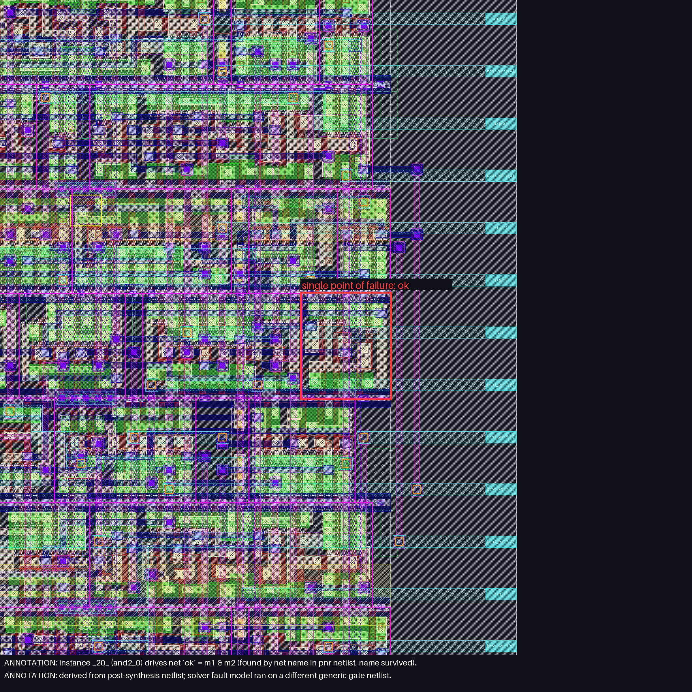

Breaking and fixing a toy secure-boot FSM model with modelled faults
A solver finds the smallest set of bit-flips (one wire, one clock tick) that makes a chip boot with the wrong key. It then tests whether adding copies of the check helps, in these example designs only.
Result first
- Scope of every V2 statement: on the stored spike netlist, with the goal being the 8-bit result word, input nets not treated as fault sites, a known power-up state and a constant non-key attacker input, no set of at most 2 flips reaches the word. The accept output
boot_okitself can be flipped with 1 flip (MEASURED, re-run by the lead). Treating input nets as fault sites reduces the minimum to 1 (MEASURED in the B2 scope matrix, research/c2/b2_scope/B2_REPORT.md). The apt Yosys 0.33 re-synthesis (85 gates) has a 2-flip attack; the conda 0.38 one (83 gates) did not. - Found (measured): flipping one wire for one clock tick breaks V0, and also V1, even though V1 has duplicated checks, because both copies end in one shared wire (
ok). V2 (three copies, each driving its own result bits) held against 1 and 2 flips on one netlist, and 3 flips broke it. - Depends on the tool: the same V2 source gave an 85-gate netlist (2 flips break it) with Yosys 0.33, and an 83-gate netlist (no 2-flip attack) with Yosys 0.38 and with Yosys 0.52 (Docker, H5) on the plain flow. That is not a version effect (the stored netlist is also Yosys 0.33): Encoding sets the floor (idle word touches 2 of 3 copies => 2 flips); the synthesis flow decides whether the floor is reached (1 when a flow merges the copies). A build or flow difference changes the netlist, not the underlying weakness. Always name the netlist hash and flow (
docs/report/WHY_TWO_FLIPS.md). - NOT shown: real glitches or real chips, other designs or tools, or any general claim that a design is secure. Faults here are modelled bit flips.
Words used on this page
- Flip (fault)
- One wire inside the chip is inverted for one clock tick. This models a glitch; it is not a physical measurement.
- k
- The number of flips the attacker is allowed.
- T (cycles)
- How many clock ticks after reset the solver looks at. "Up to T=6" means nothing beyond 6 ticks was checked.
- Netlist
- The chip described as a list of gates and wires, after the tool has turned the source code into logic. Different tool builds can give different netlists.
- Attack found / no attack found
- The solver (a SAT solver) found, or could not find, a set of at most k flips that boots with the wrong key within T ticks. "No attack found" is a bounded SAT result: it holds only within those limits.
- Unbounded proof
- A proof that holds for any number of ticks. Unbounded results exist only for the V2 spike netlist (k up to 2; ABC PDR via SymbiYosys, constant attacker input, no independent certificate; also with a free per-cycle attacker input under the rule "key never presented at any cycle", E1) and, at k=1, for the stored 85-gate apt-0.33 netlist.
- Layout, GDS, DRC, LVS
- Layout is the drawing of the chip's metal and transistors (GDS is its file format). DRC checks the drawing against manufacturing rules. LVS checks that the drawing matches the gate list.
- MEASURED, SIMULATED, ESTIMATED, ILLUSTRATIVE
- How each number was obtained: a command ran here; a simulation; a model; or a drawing that only explains.
Act 1: Break it
Pick a design. The red marker is the single flipped wire (a gate output or a flip-flop) the solver found.
Compare / decision logic ILLUSTRATIVE
Illustrative schematic: it shows the structure that matters (where the compares meet), not the real netlist. The faulted net name and cycle come from the solver.
Cycle timeline
Click a cycle. The fault is applied for one cycle only. The attacker input is held constant.
Boot with the wrong key
Act 2: Try a fix (V2; on the spike netlist)
V2 structure ILLUSTRATIVE
Illustrative. Three independent compare copies each drive their own bits of the result word, so no single wire carries the decision. The smallest attacks found use three flips: some hit all three compare copies, some hit two copies plus a bit of the result word. On the spike netlist split copies resisted 1 and 2 flips; on the apt-0.33 re-synthesis they did not.
Act 3: Prove it, within a bound
k vs verdict vs bound vs runtime
Scope of every row: result word as the goal (not the accept flag, which falls to 1 flip), spike netlists, known power-up state, input nets not fault sites, modelled bit flips only, bounded.
Solver runtime vs cycle bound T (log scale) MEASURED
Evidence labels: MEASURED = a command here produced it; SIMULATED = from simulation; ESTIMATED = from a model; ILLUSTRATIVE = drawn to explain, not a result. See docs/EVIDENCE_LABELS.md.
Act 4: Lay it out
The same V1 design taken through a real open-source flow (Yosys, OpenROAD, magic, sky130 process kit) to a GDS layout. The red box marks the cell that drives the net ok, the single point of failure from Act 1.

MEASURED (flow results): 35 synthesized cells (357.8 um2); 76 placed components including taps and fill, 399 um2 core area used at 77% utilisation (flow-tool values); setup slack +7.05 ns at 10 ns (ESTIMATED, post-route), router DRC 0 violations, netgen LVS "Circuits match uniquely" (layout vs powered reference netlist, tap and filler cells ignored by the setup). Not claimed clean: magic still reports errors inside standard-cell and filler definitions (PDK cell GDS under this rule deck); an antenna check found 0 violations and nothing is off the 5 nm grid (layout/verify/VERIFY.md; not signoff). The standard-cell errors are tap-dependent rules (nwell.4, LU.2, LU.3): clean in context for one cell (dfxtp_1); the other cell types were not tested in context; the layout is not claimed DRC-clean. ANNOTATION: the red box is found by net name in the post-synthesis netlist; the solver's fault model ran on a different, generic gate netlist. No silicon was made; this is a layout, and the faults are modelled, not physical glitches. Details: layout/v_designs/out_patched/RESULT.md.